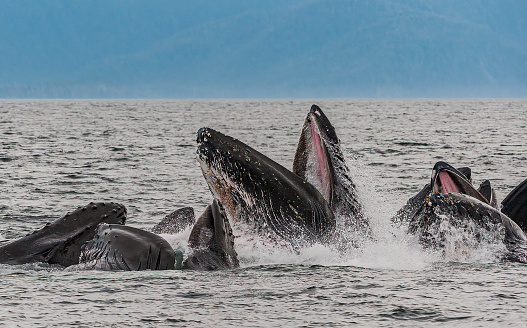
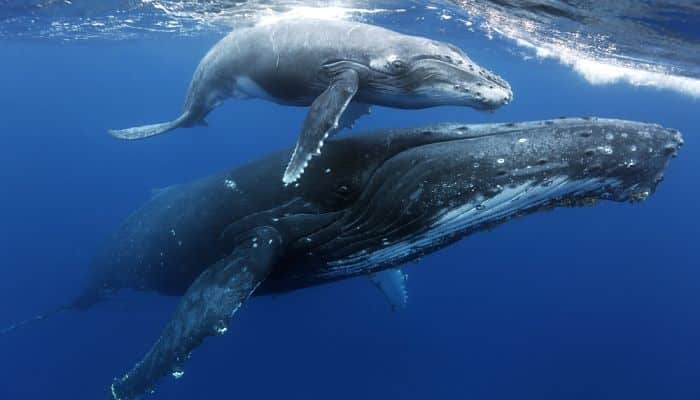

Características
La ballena jorobada también es conocida por los nombres Yubarta y Gubarte. Realmente es un rorcual, ya que no
pertenece a la familia Balaenidae que le otorgaría el nombre de ballena, pero aun así, en idioma español es
conocida como ballena jorobada. Son cetáceos misticetos, es decir, contienen barbas en vez de dientes.
Se distribuye por todos los océanos y mares del mundo; normalmente migran hasta 25 000 km cada año. Las yubartas
se alimentan solamente durante el verano en las regiones polares y migran a aguas tropicales y subtropicales
para reproducirse y parir las crías durante el invierno polar. Mientras trascurre el invierno ayunan y subsisten
gracias a su reserva de grasa. La especie se alimenta principalmente de kril y peces pequeños; posee un amplio
repertorio de métodos para alimentarse, incluyendo la notable técnica de la red de burbujas.
Alimentación
Las yubartas (ballenas) se alimentan principalmente en verano y viven de sus reservas de grasa durante el
invierno. Comen raramente y en forma oportunista durante su estadía en aguas cálidas y templadas mientras
trascurre el invierno en los polos. Se alimentan de kril y de bancos de peces pequeños como arenque (Clupea
harengus), salmón (Salmo salar), capelán (Mallotus villosus), (Ammodytes americanus) y otros como caballas
(Scomber scombrus), carboneros (Pollachius virens) y eglefinos (Melanogrammus aeglefinus) en el Norte del
Atlántico.En aguas de Australia y la Antártida, se sabe que se alimentan de kril y copépodos. Las
jorobadas capturan a sus presas mediante ataques directos o aturdiendo a sus presas al golpear el agua con sus
aletas pectorales o caudales.
Las yubartas tiene el repertorio alimenticio más diverso de todos los misticetos. La técnica más destacada
se conoce como «red de burbujas», en la cual un grupo de individuos nadan en círculos concéntricos soltando
burbujas por los espiráculos bajo los cardúmenes de peces. El anillo de burbujas rodea el cardumen de peces,
cerrándose progresivamente, confinándolos en un cilindro cada vez más pequeño. Entonces, de forma súbita se
lanzan sobre ellos tomando un gran bocado y deglutir miles de peces de un trago. Las placas ranuradas en la
boca del animal le permite drenar fácilmente toda el agua tomada en la maniobra. El anillo formado por las
burbujas puede tener hasta treinta metros de diámetro y requiere la cooperación de una docena de animales.
Usando cámaras (crittercam) adosadas a la espalda de las jorobadas se vio que algunos individuos sueltan las
burbujas, otras se sumergen más profundo para conducir los peces hacia la superficie y otras amontonan las
presas dentro de la «red» mediante vocalizaciones.

Comportamiento
Las yubartas viven en grupos, pero usualmente se trata de grupos pequeños e inestables; el único lazo
duradero ocurren entre el dúo madre-hijo. Los grupos son más estables en verano, cuando cooperan en la
búsqueda de alimento. Relaciones más duraderas de meses o años entre parejas o pequeños grupos han sido
descritas pero muy raramente. Su distribución mundial hace que sean vistas con otros misticetos o delfines,
pero con muy pocas interacciones interespecíficas.
Las ballenas jorobadas suelen ser solitarias, agrupándose ocasionalmente para alimentarse o aparearse. Por
otro lado, se considera que las jorobadas son bastante amistosas con otros tipos de vida marina ya que se las
ha visto socializando con otras especies de ballenas y delfines.

Reproducción
Las yubartas parecen tener un mecanismo de reproducción polígamo con una competencia agresiva entre los
machos para acceder a las hembras en celo. La temporada de apareamiento se lleva a cabo durante el verano y se
realiza en aguas tropicales.
La madurez sexual es alcanzada entre los 4 y 6 años (los machos suelen tardar más que la hembra para alcanzar
la madurez sexual). En los machos el tamaño de los testículos y la espermatogénesis se incrementa durante la
temporada de apareamiento coincidiendo con la ovulación en las hembras. En las hembras luego de alcanzada la
madurez el tamaño de los ovarios permanece constante. Cuando la ovulación se aproxima, los folículos de Graaf
en la superficie de los ovarios aumentan de tamaño; generalmente solo ovulan en una ocasión por cada temporada
de apareamiento. La gestación se prolonga por 11 a 11,5 meses. El apareamiento sucede una vez cada dos años,
pero puede llevarse a cabo en dos ocasiones en tres años.
De las pocas observaciones realizadas durante la copulación de la especie, se ha observado que el macho y la
hembra inicialmente nadan alineados, posterior a lo cual se entrelazan dando vueltas emparejando sus aletas
pectorales y caudales. Luego se sumergen, emergiendo posteriormente en forma vertical con las superficies
ventrales unidas para luego separase y caer sobre el agua cada uno por su lado.
